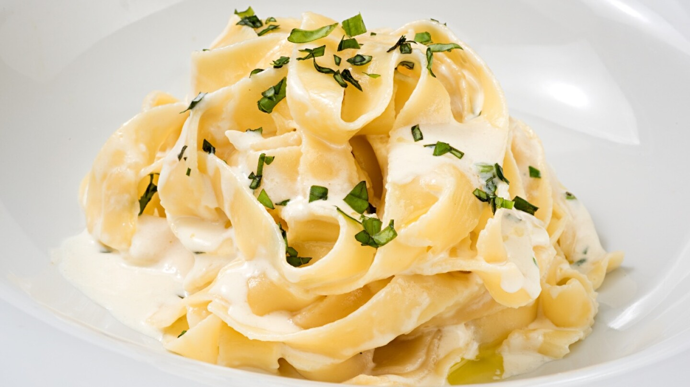

RESTAURANTE
Pasta

Precio:
$14900
- En una olla con agua y con sal, pon a cocinar los Risoni Conzazoni hasta que estén al dente. Seguido, escurre la pasta y resérvala.
- Por otro lado, en una sartén grande, a fuego medio, vierte el Aceite de Oliva Extra Virgen Bucatti y sofríe los camarones. Sazona con sal y pimienta al gusto.
- Cuando los camarones estén listos, agrega la crema de coco y el curry en polvo. Deja cocinar a fuego lento hasta que la salsa espese.
- Incorpora los Risoni Conzazoni y la piña picada a la salsa. Mezcla para integrar todos los ingredientes.
- Finalmente, sirve y decora con cilantro fresco antes de llevar a la mesa.